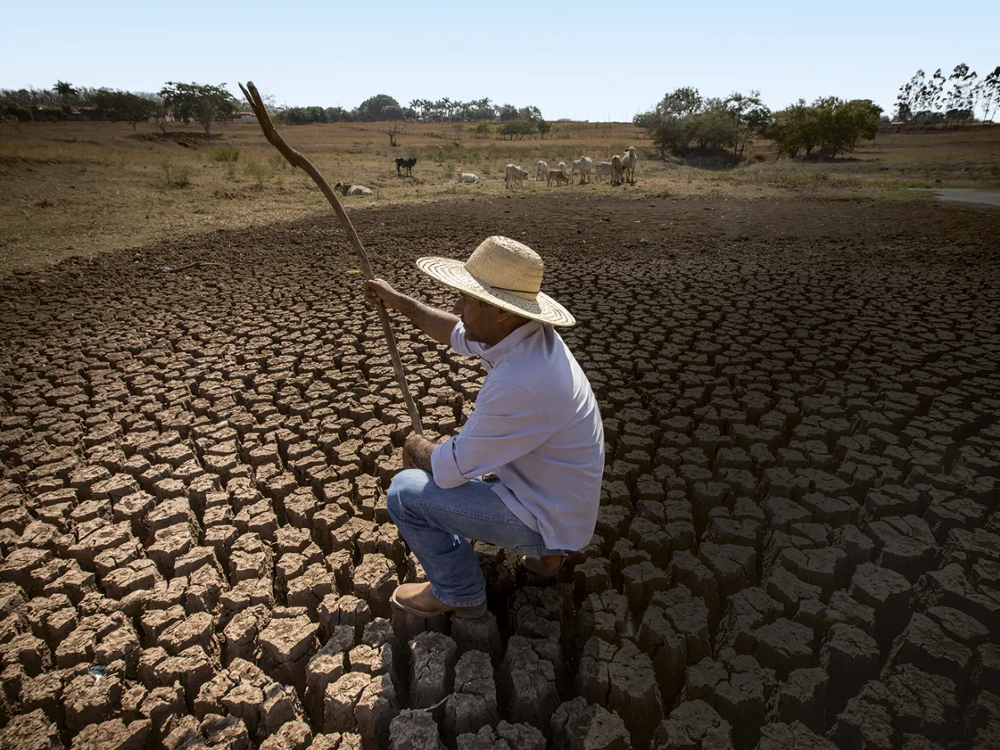
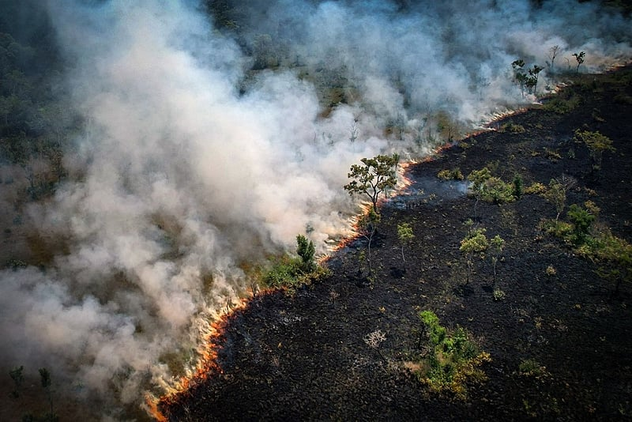

Seca e queimadas por todo o Brasil.
De norte a sul, cidades têm sofrido com tempo seco, fumaça de incêndios e nível baixo dos rios.
Atualmente, o Brasil enfrenta uma crise ambiental agravada pelas secas e queimadas que atingem diversas regiões do país. O cenário se intensifica principalmente nos biomas da Amazônia, Pantanal e Cerrado, áreas de grande importância ecológica e econômica, mas que têm sofrido com as consequências do desmatamento, mudanças climáticas e práticas agrícolas insustentáveis.
Secas: uma crise hídrica e agrícola
Efeito das secas no Brasil em 2024.
As secas, fenômeno recorrente no Brasil, têm se tornado mais severas e prolongadas em consequência das alterações climáticas globais. Estados como Mato Grosso, Goiás e partes da região Nordeste sofrem com a falta de chuvas regulares, o que afeta diretamente a agricultura, pecuária e a disponibilidade de água para o consumo humano. Em 2024, a seca já é uma das mais intensas dos últimos anos, com prejuízos significativos à produção agrícola, especialmente na cultura do milho e da soja.
Além disso, o impacto nas reservas de água doce, como o Rio São Francisco e suas bacias, tem sido alarmante. A diminuição no volume de água prejudica o abastecimento de cidades e reduz a geração de energia nas hidrelétricas, afetando o setor energético nacional.
Queimadas: um ciclo de destruição
Queimadas na Amazônia só aumentam em 30%.
As queimadas são outra face da crise ambiental no Brasil. Embora ocorram naturalmente em alguns biomas, como o Cerrado, a ação humana é o principal fator responsável pelo aumento expressivo dos focos de incêndio. Nos primeiros meses de 2024, os satélites do Instituto Nacional de Pesquisas Espaciais (INPE) registraram um aumento de 30% no número de queimadas em relação ao ano anterior, especialmente na Amazônia.
O fogo, muitas vezes usado como método de limpeza de áreas para pastagens ou plantações, sai de controle devido à combinação de secas extremas e práticas inadequadas de manejo do solo. As queimadas resultam em perda de biodiversidade, emissões significativas de gases de efeito estufa e destruição de ecossistemas inteiros, como as florestas amazônicas e pantaneiras.
Impactos Ambientais e Sociais
Os impactos das secas e queimadas vão além dos prejuízos econômicos. A degradação ambiental coloca em risco a biodiversidade brasileira, considerada uma das mais ricas do mundo. Animais silvestres perdem seus habitats, e muitas espécies entram em risco de extinção. Além disso, a qualidade do ar nas regiões afetadas se deteriora, causando problemas de saúde respiratória para as populações locais.
Outro efeito preocupante é o impacto nas comunidades indígenas e tradicionais que dependem diretamente da terra e dos recursos naturais para sua subsistência. A invasão de territórios para exploração ilegal e a perda de áreas cultiváveis para a seca intensificam a vulnerabilidade desses grupos, que já enfrentam desafios sociais e econômicos profundos.
Medidas de Mitigação e o Papel do Governo
Diante dessa crise, é urgente a implementação de medidas efetivas de combate à degradação ambiental. O governo brasileiro precisa intensificar a fiscalização e a punição contra o desmatamento ilegal, além de promover políticas de uso sustentável do solo. Investimentos em tecnologias para o uso eficiente da água, como irrigação de precisão, também são essenciais para minimizar os impactos das secas na agricultura.
Por outro lado, a conscientização da população sobre o uso responsável dos recursos naturais, o incentivo à recuperação de áreas degradadas e o fortalecimento das leis ambientais são passos fundamentais para mitigar os danos causados pelas queimadas.
Conclusão
A seca e as queimadas que assolam o Brasil em 2024 representam uma crise complexa, que envolve tanto fatores naturais quanto ações humanas. É essencial que governo, sociedade e comunidade internacional atuem juntos para preservar os biomas brasileiros e garantir um futuro sustentável. As consequências da inação não afetam apenas o meio ambiente, mas também comprometem a segurança alimentar, o abastecimento de água e a qualidade de vida de milhões de brasileiros.